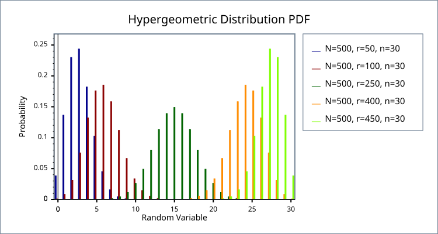
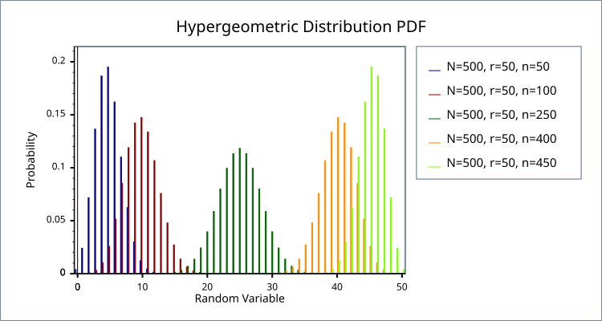

|
Home | Libraries | People | FAQ | More |


#include <boost/math/distributions/hypergeometric.hpp>
namespace boost{ namespace math{ template <class RealType = double, class Policy = policies::policy<> > class hypergeometric_distribution; template <class RealType, class Policy> class hypergeometric_distribution { public: typedef RealType value_type; typedef Policy policy_type; // Construct: hypergeometric_distribution(uint64_t r, uint64_t n, uint64_t N); // r=defective/failures/success, n=trials/draws, N=total population. // Accessors: uint64_t total()const; uint64_t defective()const; uint64_t sample_count()const; }; typedef hypergeometric_distribution<> hypergeometric; }} // namespaces
The hypergeometric distribution describes the number of "events" k from a sample n drawn from a total population N without replacement.
Imagine we have a sample of N objects of which r
are "defective" and N-r are "not defective" (the terms
"success/failure" or "red/blue" are also used). If
we sample n items without replacement
then what is the probability that exactly k items
in the sample are defective? The answer is given by the pdf of the hypergeometric
distribution f(k; r, n,
N),
whilst the probability of k defectives or fewer is
given by F(k; r, n, N), where F(k) is the CDF of the hypergeometric distribution.
![[Note]](../../../../../../../doc/src/images/note.png) |
Note |
|---|---|
Unlike almost all of the other distributions in this library, the hypergeometric distribution is strictly discrete: it can not be extended to real valued arguments of its parameters or random variable. |
The following graph shows how the distribution changes as the proportion of "defective" items changes, while keeping the population and sample sizes constant:

Note that since the distribution is symmetrical in parameters n and r, if we change the sample size and keep the population and proportion "defective" the same then we obtain basically the same graphs:

hypergeometric_distribution(uint64_t r, uint64_t n, uint64_t N);
Constructs a hypergeometric distribution with a population of N objects, of which r are defective, and from which n are sampled.
uint64_t total()const;
Returns the total number of objects N.
uint64_t defective()const;
Returns the number of objects r in population N which are defective.
uint64_t sample_count()const;
Returns the number of objects n which are sampled from the population N.
![[Warning]](../../../../../../../doc/src/images/warning.png) |
Warning |
|---|---|
Both naming/symbol and order of parameters is confusing with no two implementations the same! See Wolfram Mathematica Hypergeometric Distribution and Wikipedia Hypergeometric Distribution and Python scipy.stats.hypergeom. |
All the usual non-member accessor functions that are generic to all distributions are supported: Cumulative Distribution Function, Probability Density Function, Quantile, Hazard Function, Cumulative Hazard Function, __logcdf, __logpdf, mean, median, mode, variance, standard deviation, skewness, kurtosis, kurtosis_excess, range and support.
The domain of the random variable are the 64-bit unsigned integers in the range [max(0, n + r - N), min(n, r)]. A domain_error is raised if the random variable is outside this range. The CDF and its complement also raise a domain_error for a non-integral random variable; the PDF instead returns the analytic continuation of its formula in terms of binomial coefficients (see Implementation below).
![[Caution]](../../../../../../../doc/src/images/caution.png) |
Caution |
|---|---|
|
The quantile function will by default return an integer result that has been rounded outwards. That is to say lower quantiles (where the probability is less than 0.5) are rounded downward, and upper quantiles (where the probability is greater than 0.5) are rounded upwards. This behaviour ensures that if an X% quantile is requested, then at least the requested coverage will be present in the central region, and no more than the requested coverage will be present in the tails. This behaviour can be changed so that the quantile functions are rounded differently using Policies. It is strongly recommended that you read the tutorial Understanding Quantiles of Discrete Distributions before using the quantile function on the Hypergeometric distribution. The reference docs describe how to change the rounding policy for these distributions. However, note that the implementation method of the quantile function always returns an integral value, therefore attempting to use a Policy that requires (or produces) a real valued result will result in a compile time error. |
For small N such that N < boost::math::max_factorial<RealType>::value
then table based lookup of the results gives an accuracy to a few epsilon.
boost::math::max_factorial<RealType>::value is 170 at double or long double
precision.
For larger N the error is typically a few tens of epsilon wherever the PDF exceeds e-15 (about 3 × 10-7), however large N is, as long as products of the parameters are exactly representable (below 253 at double precision). Further into the tails the error is also a few tens of epsilon for N up to 104729; beyond that it grows in proportion to |ln f(k)|, reaching around a thousand epsilon where f(k) ~ e-700.
There are three sets of tests: our implementation is tested against a table of values produced by Mathematica's implementation of this distribution. We also sanity check our implementation against some spot values computed using the online calculator here http://stattrek.com/Tables/Hypergeometric.aspx. Finally we test accuracy against some high precision test data using this implementation and NTL::RR. Spot test values for moments (mean to kurtosis) are from Mathematica Hypergeometric Distribution and agree with an implementation of Wikipedia Hypergeometric Distribution and Python scipy.stats.hypergeom.
The PDF can be calculated directly using the formula:
However, this can only be used directly when the largest of the factorials
is guaranteed not to overflow the floating point representation used. This
formula is used directly when N
< max_factorial<RealType>::value
in which case table lookup of the factorials gives a rapid and accurate
implementation method.
For larger N the method described in "An Accurate Computation of the Hypergeometric Distribution Function", Trong Wu, ACM Transactions on Mathematical Software, Vol. 19, No. 1, March 1993, Pages 33-43 is used. The method relies on the fact that there is an easy method for factorising a factorial into the product of prime numbers:
Where pi is the i'th prime number, and ei is a small positive integer or zero, which can be calculated via:
Further we can combine the factorials in the expression for the PDF to yield the PDF directly as the product of prime numbers:
With this time the exponents ei being either positive, negative or zero. Indeed such a degree of cancellation occurs in the calculation of the ei that many are zero, and typically most have a magnitude or no more than 1 or 2.
Calculation of the product of the primes requires some care to prevent numerical overflow, we use a novel recursive method which splits the calculation into a series of sub-products, with a new sub-product started each time the next multiplication would cause either overflow or underflow. The sub-products are stored in a linked list on the program stack, and combined in an order that will guarantee no overflow or unnecessary-underflow once the last sub-product has been calculated.
This method can be used as long as N is smaller than the largest prime number we have stored in our table of primes (currently 104729). The method is relatively slow (calculating the exponents requires the most time), but requires only a small number of arithmetic operations to calculate the result (indeed there is no shorter method involving only basic arithmetic once the exponents have been found), the method is therefore much more accurate than the alternatives.
Prime factorisation is, however, slow, and above the table of primes it
is not available at all. So for N above the table of factorials we use
Loader's saddle-point method, as does R's dhyper:
the PDF is the ratio of binomial densities
f(k) = Binom(k; r, p) Binom(n - k; N - r, p) / Binom(n; N, p)
in which the powers of p cancel for any p; with p = n / N the denominator is at its mode. Each binomial density is exp of a sum of Stirling-series remainders and deviance terms, all small near the mode, so near the mode the accuracy does not depend on N. The means of the deviance terms are ratios of products of the parameters, which we form without rounding, and we use the symmetry f(k; r, n, N) = f(r - k; r, N - n, N) to keep p <= 1/2, since for p near 1 large powers of 1 - p would otherwise have to cancel. Because the result is an exponential, its relative error grows like |ln f(k)| × epsilon in the tails, so where the PDF is below e-15 and N is within the table of primes we recompute it by prime factorisation.
Loader, C. (2000), "Fast and Accurate Computation of Binomial Probabilities".
For non-integral k the PDF is the analytic continuation of the formula above, with the binomial coefficients written in terms of gamma functions. It is computed from the PDF at the integer j = floor(k) and the shift d = k - j:
f(k) = f(j) × Γ(j+1)/Γ(j+1+d) × Γ(N-r-n+j+1)/Γ(N-r-n+j+1+d) × Γ(r-k+1+d)/Γ(r-k+1) × Γ(n-k+1+d)/Γ(n-k+1)
where each ratio is evaluated with tgamma_delta_ratio, which is accurate for small d and large arguments. The result is accurate to a few epsilon beyond the conditioning of the function in k, agrees with the integer values as d → 0, and is log-concave, so it is monotone on either side of the mode.
The CDF and its complement is calculated by directly summing the PDFs. We start by deciding whether the CDF, or its complement, is likely to be the smaller of the two and then calculate the PDF at k (or k+1 if we're calculating the complement) and calculate successive PDF values via the recurrence relations:
Until we either reach the end of the distributions domain, or the next PDF value to be summed would be too small to affect the result.
The quantile is calculated in a similar manner to the CDF: we first guess which end of the distribution we're nearer to, and then sum PDFs starting from the end of the distribution this time, until we have some value k that gives the required CDF.
The median is simply the quantile at 0.5, and the remaining properties are calculated via: